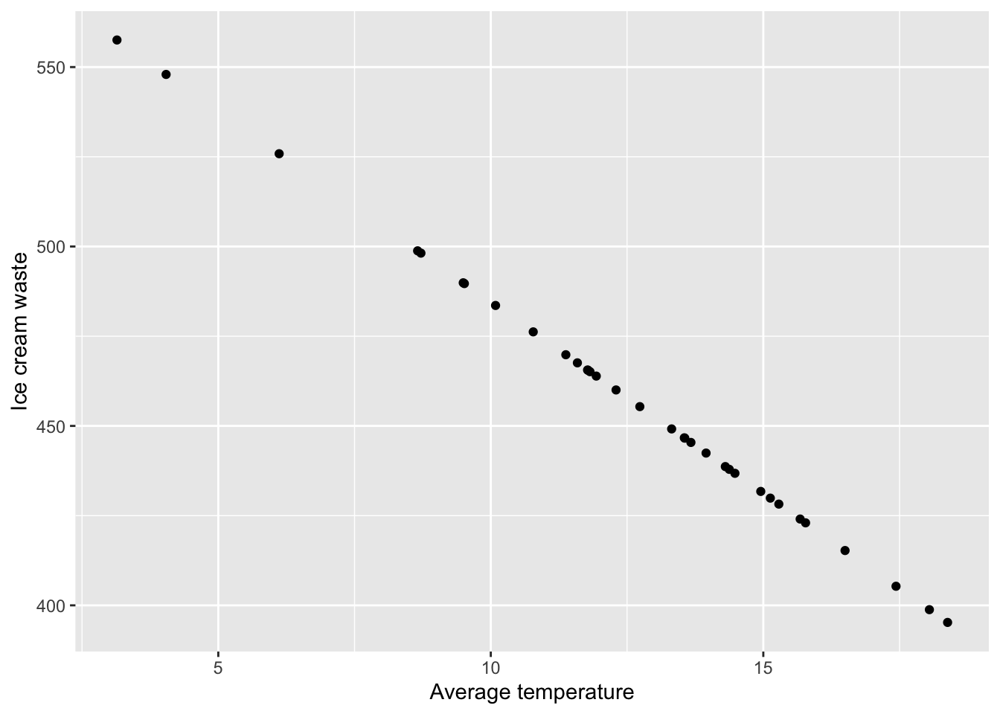

3.2 Generating data
In order to fit this linear model we need to generate two variables:
- Response variable (\(y\)): \(waste\) and
- Explanatory variable (\(x\)): \(temperature\).
Crucially, these variables need to be associated with each other as shown in the linear model equation.
3.2.1 Explanatory variable
Let’s start by generating our x-variable, \(temperature\). We will use a Normal distribution to do this since our variable is continuous.
temp<-rnorm(n=34, mean=12, sd=4)The parameters required are defined as follows:
n- the number of samples we wish to draw. In our question \(df=32\), so \(n=34\) (since for a simple linear model \(df=n-2\)).mean- the mean temperature which our data will be centered on. Pick something sensible here, we have gone for \(12^{\circ}\)C.sd- the standard deviation for \(temperature\). Again go for something that seems sensible (high enough to show some variability, but not too high that the values at the extreme are no longer sensible). This can take a bit of trial and error.
Let’s take a look at our simulated data to check that is looks sensible. To do this we will the geom_histogram() function that we used in our previous example.
ggplot(data.frame(temp),aes(x=temp)) +
geom_histogram(color="black",fill="white", bins=10) +
labs(x="Average temperature")
Exercise
Change the values of the mean and sd in the code above and plot a histogram of the newly simulated \(x\) value to see how the data changes.
3.2.2 Using a linear model to generate the response
In order to generate the response variable \(y\) we need to choose a sensible linear model which will relate the explantory variable \(x\) to the response variable \(y\).
To specify a simple linear model we need to choose two values, the intercept, \(\alpha\), and the slope, \(\beta\). In this example we want to estimate ice cream waste from average temperature, we are therefore going to assume there is a negative relationship between these variables, i.e. the warmer it is, the more ice cream you will sell! Therefore, the slope parameter (\(\beta\)) should be negative. The size of this will depend on what you think is a sensible interpretation. Here let’s go for -10.65, so for every unit increase in average temperature, ice cream waste decreases by 10.65kg. For the intercept, again think about a sensible value based on the context. Remember this value is where the regression line will cut the y-axis. Let’s choose 591. The choice for \(\alpha\) and \(\beta\) will be subjective, and might take some trial and error before deciding on your final values. Just make sure that the interpretation of the final model is sensible.
We can now generate the response variable, \(y\) as follows:
waste<-591 - 10.65*tempwhere
- 591 is our chosen value for \(\alpha\),
- -10.65 is our chosen value for \(\beta\),
tempis the x-variable we have already simulated.
Let’s now produce a scatterplot of our data using ggplot2. We will use a similar structure to the plots we have produced previously but we will use the geom_point() function to produce a scatterplot as follows:
data<-data.frame(waste=waste, temp=temp)
ggplot(data, aes(x=temp, y=waste)) +
geom_point() +
labs(x="Average temperature", y="Ice cream waste")
To create this scatterplot we first had to store our two variables in a dataframe which we called data. Here we are creating a dataframe with two columns which we have given the same names as the two data vectors we have already created, namely waste and temp. In these columns we are simply storing the data vectors we have simulated above. We then create the scatterplot which works as follows:
- First we specify our data using
ggplot(data). - We then specify the variables we want to plot using the
aes()argument, wherex=tempandy=waste. - We then generate the scatterplot using
geom_point(). Here we have used the default values so we don’t need to specify anything within this function. - Finally, we label our x and y axis using the
labsfunction.
Now, you may have noticed that our scatterplot has identified an issue with the data we have generated. The code we have used has produced a perfect linear relationship between \(temperature\) and \(waste\). This does not seem realistic so we need to add some random noise to \(y\). We can do this by adding some randomly generated values from a normal distribution with mean 0. Think of this as adding residuals to our model.
waste<-591 - 10.65*temp + rnorm(n=34, mean=0, sd=20)We always want the model residuals to be centered on 0, so the mean within rnorm() should be 0. The level of variability within \(y\) can be controlled via the standard deviation (sd). Again, this might take some trial and error to get something you are happy with.
Let’s take a look at the scatterplot with our newly generated response.
data<-data.frame(waste=waste, temp=temp)
ggplot(data, aes(x=temp, y=waste)) +
geom_point() +
labs(x="Average temperature", y="Ice cream waste")
That looks better!
Exercise
1. Change the values of \(\alpha\) and \(\beta\) in the code above to see how the relationship between \(x\) and \(y\) changes.
2. Alter the value of sd in the code above to control the level of variation in the \(y\).